| 洛丽塔穿搭的简单介绍: |
| 头部:
有配套印花KC、波奈特、发带、边夹、小礼帽等。也有的是以小型物品饰物(如糖果、皇冠)来搭配。一般也会佩戴假发。 |
| 身体部份:
衬衫、半身裙（SK）、连衣裙（OP)、无袖连衣裙(JSK)，也可以搭配灯笼裤或是马甲来做为整体的搭配，主要还是以想表现风格为主。 |
| 脚部:
常见的有及膝袜或是过膝袜，也会有印花来增加风格。 |
| 鞋子:
常见为圆头高跟鞋，还有平跟鞋和松糕鞋。 |
| 配件:
手部一般为配套手袖，还有很多风格的戒指，颈部也会有配饰。 |
| 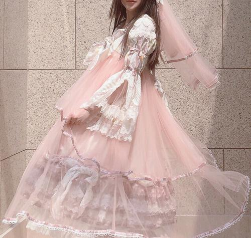 |
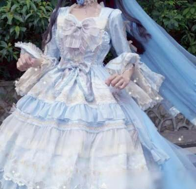 |
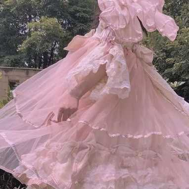 |
洛丽塔
| 外文名:lolita |
来源：
我们最早听到的洛丽塔，是一本小说的名字和一位12岁少女的名字。
当“洛丽塔”流传到了日本。日本人将洛丽塔作为可爱少女的代名词，统一将14岁以下的女孩称为“洛
丽塔代”，而且态度变成“女郎强穿少女装”，即成熟女人对青涩女孩的向往。 而几乎所有东方型的“
洛丽塔”，都以电影《下妻物语》里的宫廷娃娃作为标准来打扮自己。港版“洛丽塔”由此而来，而惯
于向香港取经的粤版洛丽塔也一样。洛丽塔年龄集中在13－25岁，她们并不存在要拼命装嫩的需要，更
多时候她们追求的是一种崭新的衣着态度，和寻求美好不一般的生活方式 |
起源:
洛丽塔洋装是拥有洛丽塔风格的时装。洛丽塔风格和时装洛丽塔洋装洛丽塔洋装
是一种次文化，源自日本，从欧洲宫廷裙引入。这种穿衣风格的典型是及膝裙，内里穿着纱裙或泡裤以达到散开的效果。典型的鞋子是可爱类，例如圆头平底女鞋
马头鞋和其他类似的鞋子也很常见。裙子通常以有饰边的、有硬绉领的、或缀上蕾丝的维多利亚女装衬衣，常配上彼得潘或水手服的衣领，或有蕾丝的长衬衣。 |
| 定义:时尚风格 |
| 主流：甜美，古典，哥特 |
| 所属人群：少女 |
| 相关书籍:三大主流 |
| 甜美 |
甜美洛丽塔（Sweet Lolita）———以粉红、粉蓝、白色等粉色系列为主，衣料选用大量蕾丝，
务求缔造出洋娃娃般的可爱和烂漫，走在大街上也不算太张扬。
甜美洛丽塔（Sweet Lolita）的服装通常包含非常高比例的蕾丝及褶边，裙子及膝，并且使服装的外观看起来尽可能的“甜美”与“可爱”。
其经常使用的颜色包括粉红、粉蓝，也有米黄色与红色。至于黑色如果包含上述的特征及标准，当然也有美的效果。
甜美洛丽塔也会将服装上的印花设计成花朵、水果或其他甜食的样子；在配件方面则常常有娃娃、布偶或泰迪熊。 |
| 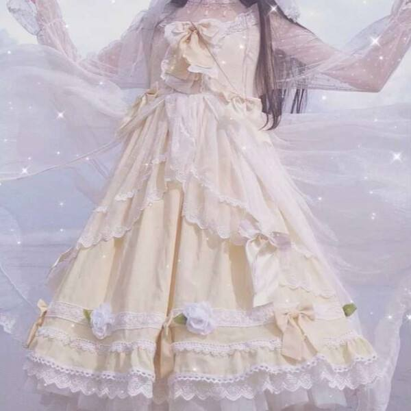 |
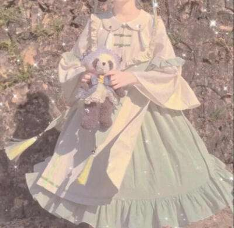 |
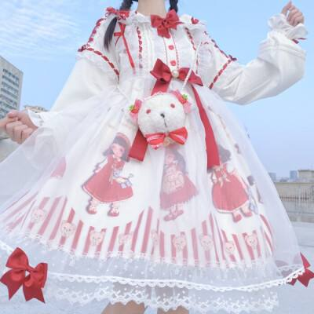 |
| 古典 |
古典洛丽塔（Classical Lolita）———以简约色调为主，着重剪裁以表达清雅的心思
，颜色不出挑，如茶色和白色。蕾丝花边会相应减少，而荷叶褶是最大特色，整体风格比较平实，适合新手。
主流古典洛丽塔（Classical Lolita）是洛丽塔风格的一种次分类，它是由维多利亚风（Victorian fashion，维多利亚时代的女装风格）、
巴洛克风及洛可可风所获得的灵感而来的。此一风格不同于甜美洛丽塔所散发出的天真烂漫，而呈现出更为成熟的风采，它以花朵或花朵似的造型为主题，
具有深沈且柔和的颜色，纤细的样式及法国皇宫式的腰身。使用的颜色包括全白、古典白、粉红、葡萄酒红、蓝、咖啡、黑色等 |
| 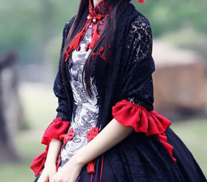 |
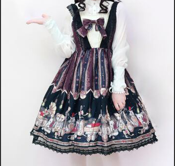 |
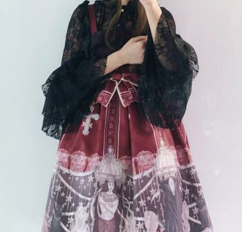 |
哥特 |
哥特洛丽塔（Gothic Lolita）———主色是黑和白，特征是想表达神秘恐怖和死亡的感觉。
通常配以十字架银器等装饰，以及化较为浓烈的深色妆容，如黑色指甲、眼影、唇色，强调神秘色彩。
Gothic Lolita源自哥德风格在日本和洛丽塔风格的结合。因为不强调“萝莉”的小女孩特质，所以比较像是哥德风格的次分类而不是洛丽塔风格的次分类。
衣物通常是黑、白色，但也有可能包含黑色和暗蓝色或黑和红。暗绿色也会被使用，但不普遍 |
| 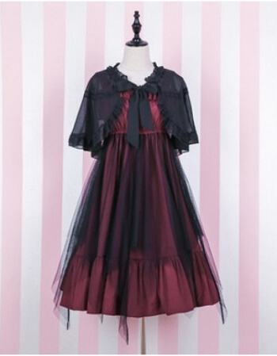 |
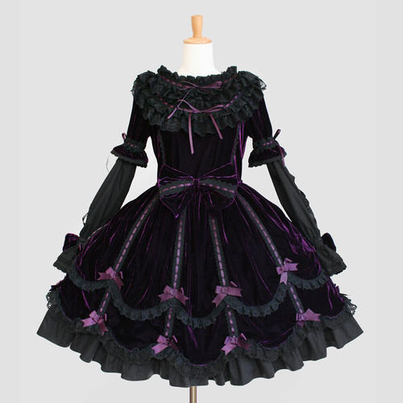 |
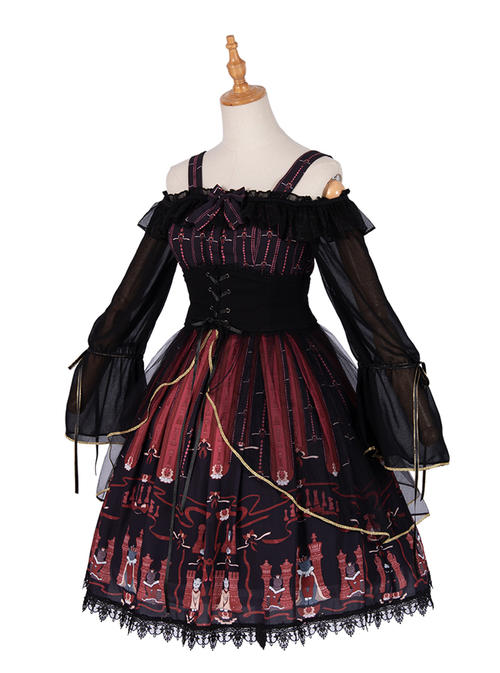 |